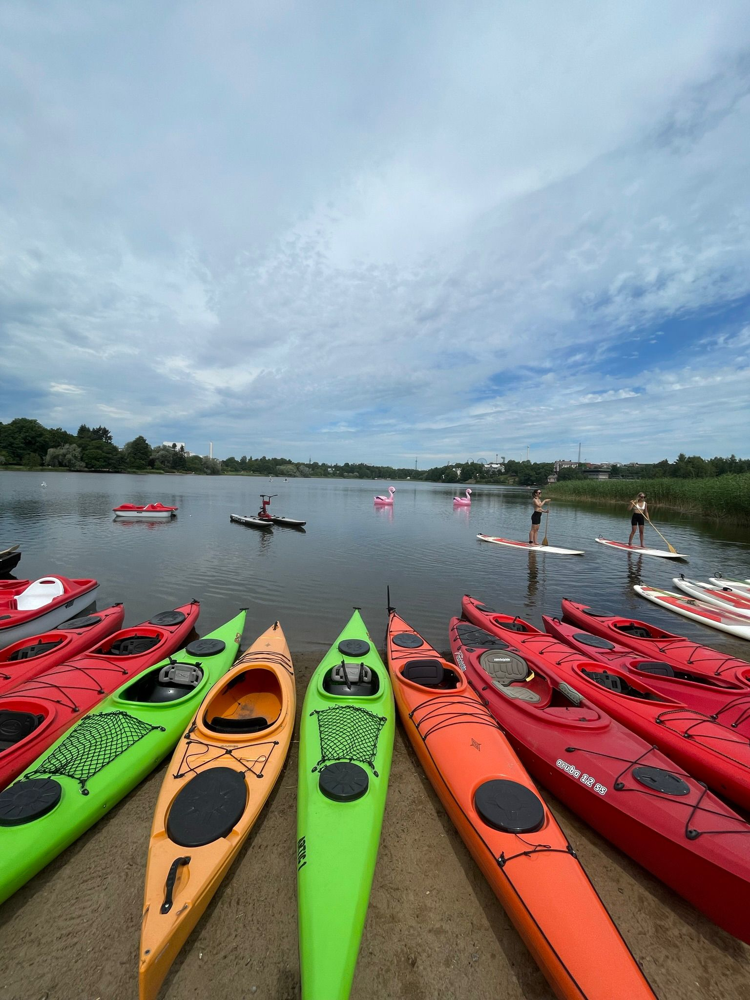

Olga is a certified outdoor guide and an authorised Helsinki and Suomenlinna Sea Fortress guide with nearly a decade of experience leading travelers through Finland’s nature, culture, and history. She is also a qualified ski instructor, bringing her passion for active outdoor adventures to every season — from cycling through forest trails and city streets in summer to skiing and snowshoeing across snowy landscapes in winter.
Holding a Master’s degree in Social Anthropology and Communication, Olga combines deep cultural insight with excellent storytelling skills. Her tours are more than just sightseeing — they are immersive journeys filled with engaging stories, local perspectives, and genuine connections.
Known for her friendly and enthusiastic approach, Olga is dedicated to creating memorable and meaningful experiences for every guest. Whether guiding through the cobbled courtyards of Suomenlinna, the vibrant streets of Helsinki, or Finland’s peaceful natural settings, she brings warmth, curiosity, and a contagious love for adventure to every tour.